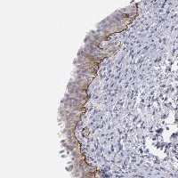

CD104 (integrin β4) marks basal epithelium at the hemidesmosome.
Auto-compiled from Europe PMC: open-access papers where CD104 (Integrin β4) co-occurs with a CODEX / PhenoCycler, MIBI, CyCIF or imaging-mass-cytometry method. See all results →
